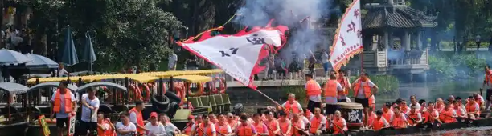

Culture & Customs of Jiaxing
Water Town Folk Culture
Situated in the heart of Jiangnan water country, Jiaxing has cultivated a distinctive water town folk culture over thousands of years. Boats serve as an essential mode of transportation here, giving rise to cultural symbols such as boatwomen, boat songs, and sculling. Water town residents build their homes along the waterways, maintaining a leisurely pace of life described by the ancient poet as "rising at dawn to tend the fields, returning home by moonlight with a hoe on the shoulder," preserving the traditional Jiangnan way of life.
Jiaxing's folk activities are intimately connected with water. The Dragon Boat Race during the Dragon Boat Festival is a major local celebration — every year, grand races are held at Nanhu Lake, Xitang, and other locations, drawing massive crowds of spectators along the banks in a lively and festive atmosphere. Additionally, water town wedding customs are uniquely charming: the bridal procession travels by boat, accompanied by music and song, creating an enchanting spectacle.

Traditional Festival Customs
Jiaxing's traditional festivals retain a rich Jiangnan character: during Spring Festival, people paste couplets, eat rice cakes, and stay up for New Year's Eve; Qingming Festival brings tomb-sweeping and eating green glutinous rice balls; the Dragon Boat Festival features not only dragon boat races but also eating zongzi, hanging calamus, and drinking realgar wine; the Mid-Autumn Festival brings moon-watching and mooncakes; Double Ninth Festival is for climbing mountains and admiring chrysanthemums; and the Winter Solstice is celebrated with tangyuan. Each festival has its own unique way of celebration.
Jiashan Field Songs
Jiashan field songs are folk ballads from the Jiashan region of Jiaxing, originating in the agrarian era. Sung by farmers while working in the fields, these songs feature melodious tunes and rich content .
Nanhu Boat Boxing
Nanhu boat boxing is a traditional martial art born on Nanhu Lake. Because it is practiced on the narrow deck of a boat, it has developed a unique compact and practical style, making it an important component of Jiangnan martial arts.
Wuzhen Incense Fair
The Wuzhen Incense Fair is a traditional folk market held annually from Qingming to Guyu (Grain Rain). Combining worship, commerce, and entertainment, it is one of the most distinctive folk activities in Wuzhen.
Haining Shadow Puppetry
Haining shadow puppetry has a long history dating back to the Southern Song Dynasty. Featuring exquisitely crafted figures, refined performances, and unique vocal styles, it is an important school .
Culture of Distinguished Figures
Jiaxing has nurtured numerous historical and cultural luminaries: Mao Dun is a giant of modern Chinese literature, author of classics such as "Midnight" and "The Shop of the Lin Family"; Xu Zhimo is a representative poet of the Crescent Moon Society, whose "Saying Goodbye to Cambridge Again" is widely beloved; Jin Yong is the grandmaster of martial arts fiction, having created classics including "The Legend of the Condor Heroes" and "Demi-Gods and Semi-Devils"; the city has also produced distinguished figures in various fields such as Wang Guowei, Feng Zikai, and Shiing-Shen Chern.
Many of these luminaries' former residences are well preserved — including the Mao Dun Residence, Xu Zhimo Residence, and Feng Zikai Memorial Hall — serving as integral components of Jiaxing's cultural tourism and testifying to the city's profound cultural legacy.